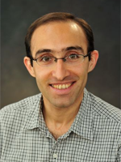

MembersDirector of the AICV Research Group Mohammad Biglarbegian Ph.D., P.Eng Professor Biglarbegian is the founder and director of the Advanced Mechatronics and Robotics Control lab at the University of Guelph. His research interests are design, control, and optimization of mechatronics sytstems especially for autonomous robots and cars. He and his students have been developing advanced algorithms for intelligent vehicles and robots. Dr. Biglarbegian obtained his Ph.D. in Mechanical and Mechatronics Engineering, from the University of Waterloo, M.A.Sc. in Mechanical Engineering from the University of Toronto, and B.Sc. in Mechanical Engineering from the University of Tehran, respectively. He has been with the School of Engineering, the University of Guelph since 2011. He is a long-distance runner, enjoys playing tennis and skiing. Current Members
Alumni
|